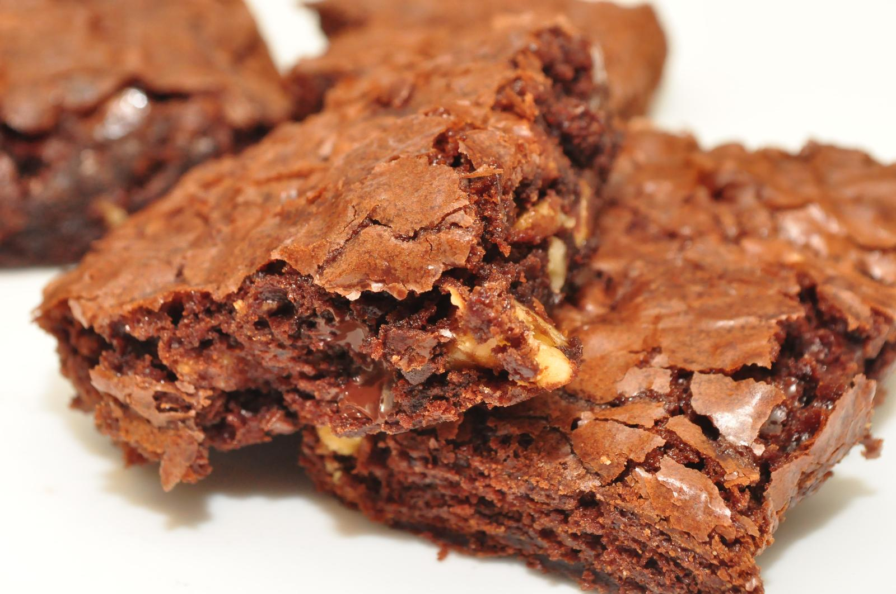

Brownies
Home

“brownies...yawn...boooring” by jeffreyw, CC BY 2.0
Description
A simple recipe for when you want something sweet and chocolatey :)
Ingredients
- 1 stick unsalted butter
- 8oz semi-sweet chocolate (chips or chopped)
- 1/2 cup white sugar
- 1/2 cup brown sugar
- 3 eggs
- 1 tsp vanilla
- 1/2 cup flour
- 2 tbsp cocoa powder
- 1/2 tsp salt
- 1 cup walnuts, halved
Steps
- Toast the walnuts in a pan for 5 minutes, stirring constantly.
- Set the walnuts aside and cook butter over low/medium heat enough to brown the milk solids.
- Add the chocolate to the saucepan, melting and stirring until combined.
- preheat oven to 350 F and grease a 9" glass baking pan.
- whisk the sugars into the mixture and let the pan cool ~10min.
- Once it's cooled, add flour, cocoa powder, and salt, whisking until combined again. Then fold in walnuts.
- Pour the batter into the baking pan and bake for 30-35 min. Let cool in the pan and serve.